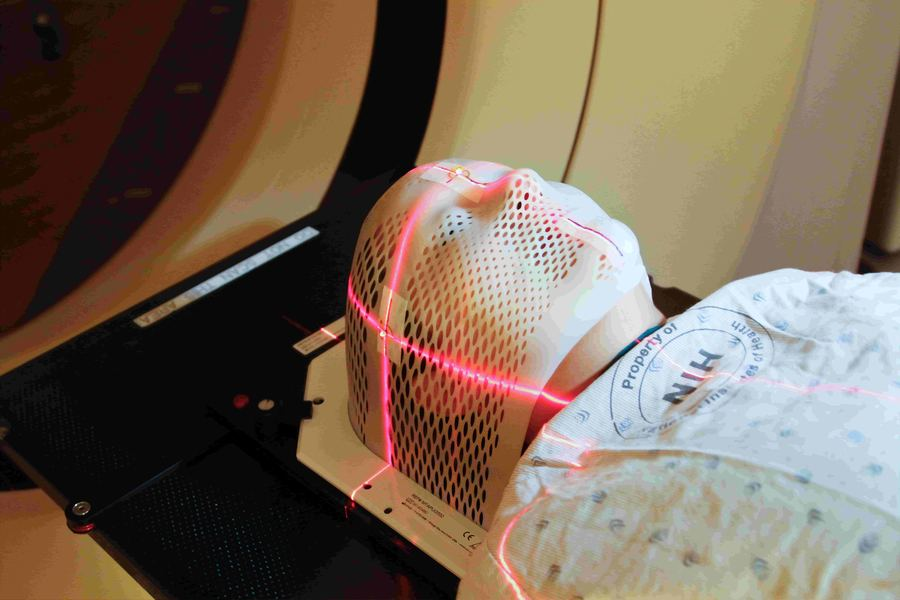
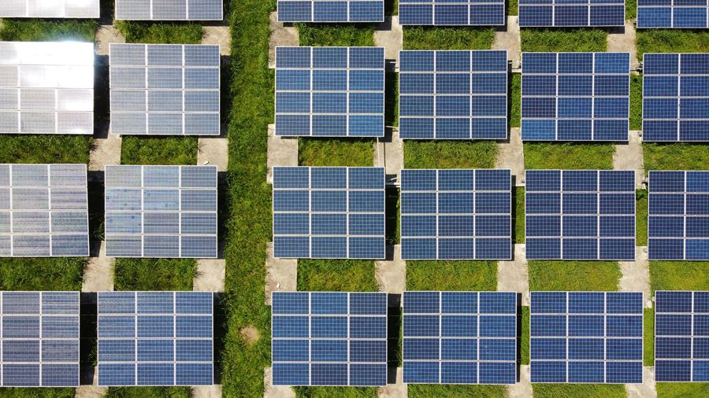

Work Experience
Five internships and research roles translating business and research problems into data-driven solutions.
Machine Learning Engineer (Intern)
- Built a predictive natural language interface over 200+ real-world datasets: exploratory data analysis, feature selection, and model validation; fine-tuned Qwen2.5-Coder-7B with PEFT/LoRA and built a retrieval pipeline.
- Achieved a 5x performance improvement and 30% reduction in computational overhead; communicated technical tradeoffs to non-technical stakeholders.
Research Assistant
- Applied statistical methods and machine learning to extract actionable insights from complex education datasets: built predictive models, conducted EDA, and developed data pipelines.
- Collaborated with senior researchers to improve analytical workflow efficiency by 80%.
Data Science Intern
- Reviewed and analyzed prior data science work against current company projects, conducted EDA, identified trends and data quality issues, and communicated actionable findings to stakeholders.
Machine Learning Intern
- Built and validated predictive models using a dataset of 200K+ users; conducted feature engineering and statistical analysis on large-scale structured data.
- Ensured data quality and governance throughout the pipeline; reported findings to cross-functional stakeholders.
Blockchain Developer Intern
- Designed and implemented distributed systems using the Cosmos SDK and Golang, built REST API interfaces, and collaborated cross-functionally on system architecture.
Projects
Shipped, hands-on builds outside of coursework and research.
WorkIn — Pose Detection for Workouts
An online exercise-training platform built on PoseNet and p5.js. Real-time webcam posture detection tracks the user's skeleton and starts an on-screen timer only when the correct exercise posture is held, enabling accurate, self-guided personal training.
View on GitHub →VirtuAble — Accessibility Project
A complete accessibility tool that lets visually impaired users control video calls without a keyboard or mouse: an OpenCV real-time hand-gesture pipeline maps gestures to meeting controls (mute, hand-raise) and pairs with speech recognition for audio feedback.
View on GitHub →Publications
Four peer-reviewed papers applying statistical and deep learning methods to real datasets.
Chest X-Ray Classification of Pneumonia Disease using EfficientNet and InceptionV3

AI in Radiation Oncology

AI applied to the Management and Operation of Solar Systems
Real-Time Visual Data Processing Using Neuromorphic Systems
Education
M.S. Computer Science — NC State University
Thesis: Investigating the Impact of Technical Debt Remediation on Code Translation Tasks — a four-stage pipeline across frontier models including GPT-4/ChatGPT, Claude, Gemini, and DeepSeek; 70 controlled experiments; custom statistical evaluation framework; 4 peer-reviewed publications. Coursework: Optimization and Algorithms, Advanced Deep Learning, AI, Statistics, Independent Study in ML for Software Engineering.
B.E. Computer Science Engineering — Vellore Institute of Technology
Capstone: Indic Legal LLM — a production LLM system with NLP. 4 published peer-reviewed papers in applied ML.
Skills
Data Science & Statistics
Machine Learning & AI
Engineering & Collaboration
Certifications & Leadership
Certifications
- Statistics & ML — Stanford / DeepLearning.AI
- AI Analyst
- TensorFlow Developer
- Salesforce AgentBlazer Champion
Leadership
- President, Ratio Christi NC State (2025–2026) — hosted events with 100+ participants; Legatus Christi Award
- Co-Lead, Cohere for AI — mentored 50+ workshop participants
- VP, CodeChef-VIT — student chapter of 4,000+ participants